1. Introducción teórica
Un Algoritmo Genético (AG) es una metaheurística poblacional inspirada en la evolución biológica. Parte de una población inicial de soluciones, evalúa su aptitud con una función fitness y aplica operadores estocásticos de selección, cruzamiento y mutación para construir nuevas generaciones.
En su versión canónica, el AG utiliza una representación fija de los individuos, una población de tamaño constante y un ciclo de reemplazo iterativo. La presión selectiva y la diversidad genética determinan el equilibrio entre explotación de buenas soluciones y exploración del espacio de búsqueda.
El elitismo agrega un mecanismo de preservación: los mejores individuos de una generación se copian directamente a la siguiente. Esto evita perder soluciones de alta calidad y suele acelerar la convergencia, aunque puede reducir la diversidad si se aplica sin control.
2. Descripción del problema y función objetivo
El objetivo del trabajo es maximizar la función:
f(x) = (x / 2³⁰)², con dominio x ∈ [0, 2³⁰].
La codificación elegida es binaria de 30 bits, de modo que cada cromosoma representa un entero del dominio. En la práctica computacional el fenotipo máximo representable en binario puro es $2^{30}-1$. Resulta matemáticamente imposible representar el límite superior cerrado del dominio ($2^{30}$) mediante una conversión entera directa sin aplicar un factor de escala. Se priorizó mantener la representación canónica original asumiendo la pérdida marginal en el límite superior; por tanto, el máximo observado y reportado en los experimentos es $2^{30}-1$.
El trabajo solicita reportar el cromosoma ganador, el valor máximo alcanzado, el valor mínimo y el promedio de cada población, además de la desviación estándar del fitness por generación para estudiar la convergencia.
3. Parámetros fijos y variables
| Parámetro | Valor fijo | Variantes usadas | Observación |
|---|---|---|---|
| Codificación | Binaria de 30 bits | Sin variante | Representa enteros del dominio completo |
| Población inicial | 10 individuos | 20 en experimentos adicionales | Población pequeña para observar convergencia |
| Probabilidad de crossover | 0.75 | Sin variante | Preserva buen equilibrio entre mezcla y conservación |
| Probabilidad de mutación | 0.05 | 0.01 y 0.10 | Sirve para analizar exploración y estabilidad |
| Método de crossover | 1 punto | Sin variante | Implementación canónica |
| Método de mutación | Invertida | Sin variante | Se invierte un segmento aleatorio del cromosoma |
| Métodos de selección | Ruleta, torneo, elitismo | Sin variante | Se comparan calidad, estabilidad y tiempo |
| Generaciones base | 20 | 100 y 200 | Permite comparar calidad vs costo computacional |
4. Codificación y resultados para Opción A (ruleta)
La selección por ruleta asigna a cada individuo una probabilidad proporcional a su fitness. En este problema, la ruleta fue la opción más conservadora en 20 generaciones: mejora la población, pero converge con menor estabilidad que torneo o elitismo.
| Métrica | Valor |
|---|---|
| Mejor fitness global | 0.536633505295 |
| Mejor valor de x | 786572506 |
| Cromosoma ganador | 101110111000100010010011011010 |
| Fitness máximo de la población final | 0.536633505295 |
| Fitness mínimo de la población final | 0.496200560127 |
| Fitness promedio de la población final | 0.531448125488 |
| Desviación estándar final | 0.011962907246 |
| Tiempo total de ejecución | 0.003355 s |
La evolución muestra que ruleta mejora gradualmente, pero su sensibilidad a la distribución del fitness produce una estabilidad inferior en corridas repetidas. A 100 generaciones, sin embargo, puede alcanzar soluciones muy cercanas al óptimo, aunque con mayor dispersión entre repeticiones.
5. Codificación y resultados para Opción B (torneo)
El torneo selecciona el mejor individuo dentro de un subconjunto aleatorio. Esto incrementa la presión selectiva y suele acelerar la convergencia sin depender tanto de la escala absoluta del fitness.
| Métrica | Valor |
|---|---|
| Mejor fitness global | 0.833557591769 |
| Mejor valor de x | 980319576 |
| Cromosoma ganador | 111010011011100111110101011000 |
| Fitness máximo de la población final | 0.833557591769 |
| Fitness mínimo de la población final | 0.833557591769 |
| Fitness promedio de la población final | 0.833557591769 |
| Desviación estándar final | 0.000000000000 |
| Tiempo total de ejecución | 0.003314 s |
En 20 generaciones, torneo produjo una población final completamente homogeneizada, con desviación estándar nula en la última generación. Esto indica convergencia fuerte, aunque sin llegar al máximo absoluto.
6. Codificación y resultados para Opción C (elitismo)
El elitismo preserva exactamente dos cromosomas por generación sin alterarlos. Para ajustarse al enunciado, esta opción se evaluó con 100 iteraciones del algoritmo y luego se resumieron sus resultados promedio. También mostró la mejor relación entre calidad de solución y estabilidad en las repeticiones más largas.
| Métrica | Valor |
|---|---|
| Iteraciones evaluadas | 100 |
| Cromosomas preservados en la élite | 2 |
| Mejor fitness promedio | 0.999830552797 |
| Mejor fitness máximo | 0.999999990687 |
| Mejor fitness mínimo | 0.999510800704 |
| Generación promedio del mejor fitness | 95.33 |
| Mejor x promedio | 1073650841.00 |
| Tiempo promedio de ejecución | 0.008385 s |
Con una élite de dos cromosomas, elitismo alcanzó soluciones prácticamente óptimas en 100 iteraciones y mantuvo la mejor estabilidad agregada de la comparación. Ese comportamiento lo deja como la alternativa más sólida cuando importa tanto la calidad de la solución como el costo computacional medio.
7. Experimentos adicionales
Para enriquecer las conclusiones, se variaron el tamaño poblacional y la tasa de mutación. Los resultados muestran que aumentar la población ayuda a explorar mejor el espacio de búsqueda, y que una mutación demasiado baja puede estancar a ruleta, mientras que elitismo tolera mejor estos cambios.
Los resultados completos de estos experimentos se guardan en un archivo de resultados de los experimentos y las figuras generadas se incluyen en la carpeta de figuras del informe. Para regenerar los datos y las gráficas desde el código fuente, ejecutar en la raíz del repositorio:
python -m pip install -r requirements.txt
python main.py
| Configuración | Método | Tamaño población | P(mutación) | Mejor fitness | Mejor x | Tiempo (s) |
|---|---|---|---|---|---|---|
| Ruleta, Pobl=20 | ruleta | 20 | 0.05 | 0.997153 | 1072212229 | 0.014333 |
| Ruleta, Pmut=0.10 | ruleta | 10 | 0.10 | 0.995830 | 1071500998 | 0.009481 |
| Torneo, Pobl=20 | torneo | 20 | 0.05 | 0.999998 | 1073740780 | 0.016485 |
| Torneo, Pmut=0.10 | torneo | 10 | 0.10 | 1.000000 | 1073741560 | 0.012816 |
| Elitismo, Pobl=20 | elitismo | 20 | 0.05 | 1.000000 | 1073741823 | 0.013284 |
| Elitismo, Pmut=0.10 | elitismo | 10 | 0.10 | 0.999866 | 1073669835 | 0.009196 |
| Ruleta, Pmut=0.01 | ruleta | 10 | 0.01 | 0.650290 | 865871177 | 0.007812 |
| Elitismo, Pmut=0.01 | elitismo | 10 | 0.01 | 0.996763 | 1072002645 | 0.007632 |
La mutación baja perjudicó especialmente a ruleta, que quedó lejos del óptimo. En cambio, elitismo mantuvo soluciones competitivas incluso con una tasa reducida, y torneo fue capaz de llegar al óptimo cuando se amplió la población o se extendió el número de generaciones.
Con una élite de dos cromosomas, elitismo alcanzó soluciones prácticamente óptimas en 100 iteraciones y mantuvo la mejor estabilidad agregada de la comparación. Ese comportamiento lo deja como la alternativa más sólida cuando importa tanto la calidad de la solución como el costo computacional medio.
La tabla adjunta resume los promedios calculados sobre las repeticiones realizadas por cada configuración (se indican medias y desviaciones relevantes), para mayor rigor académico.
8. Gráficas comparativas
La desviación estándar del fitness por generación se calcula como:
σ = sqrt( Σi=1N (fi - f̄)² / N )
Una desviación baja sugiere convergencia de la población; una desviación alta indica diversidad. Las figuras muestran además cómo evolucionan los máximos, mínimos y promedios del fitness por generación.
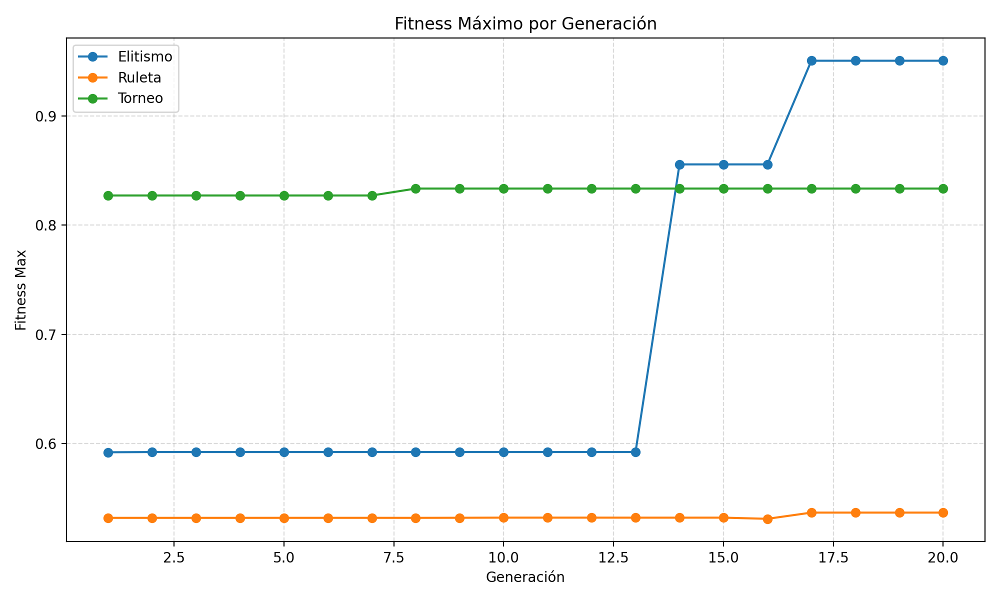
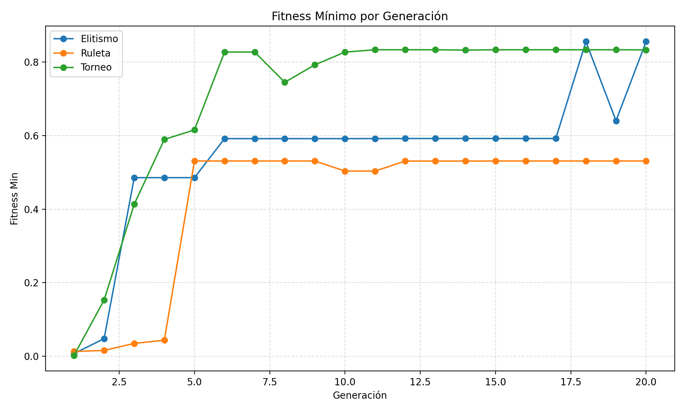

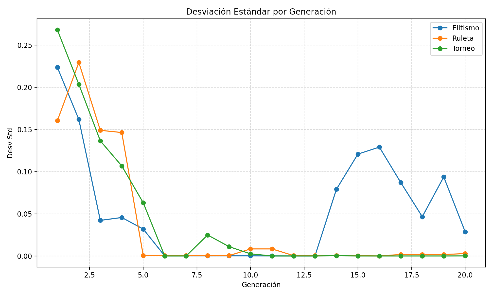
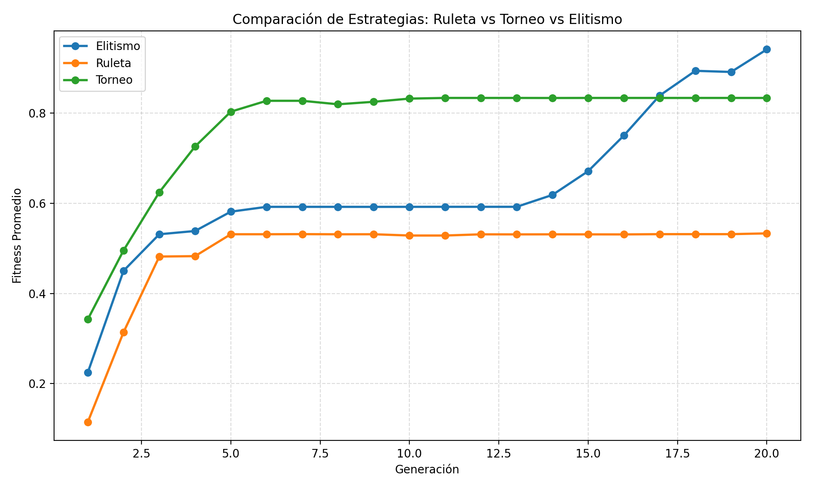
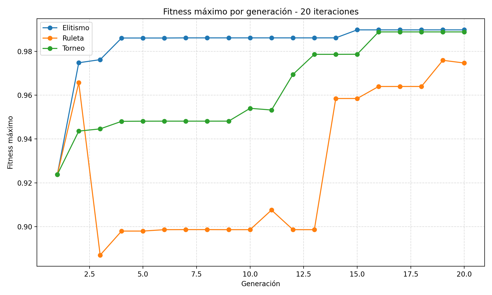
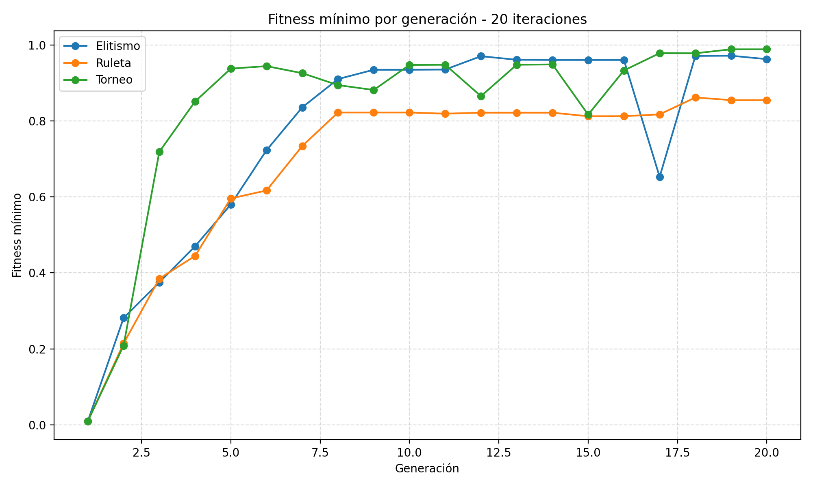
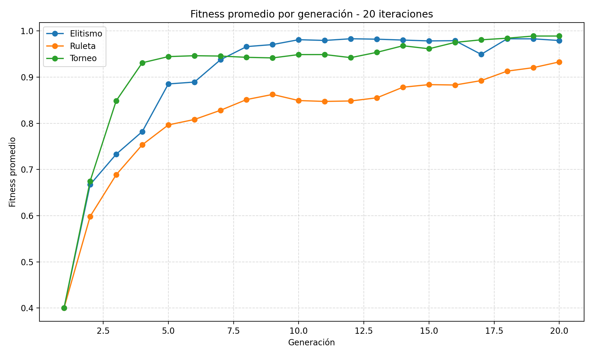

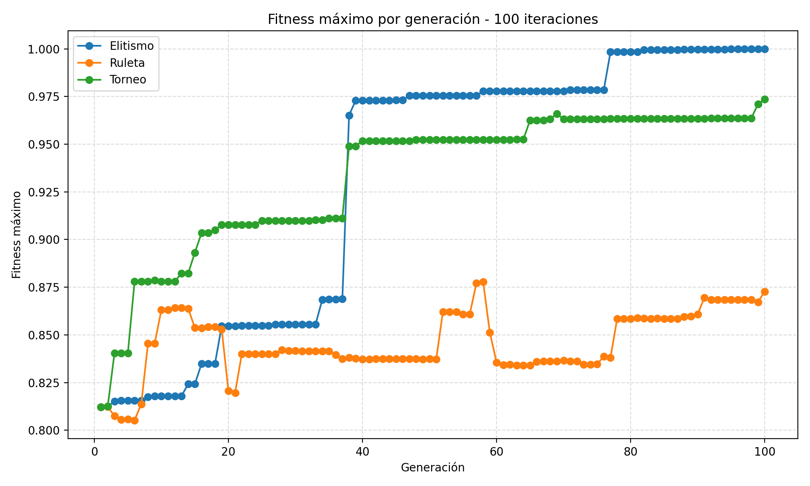
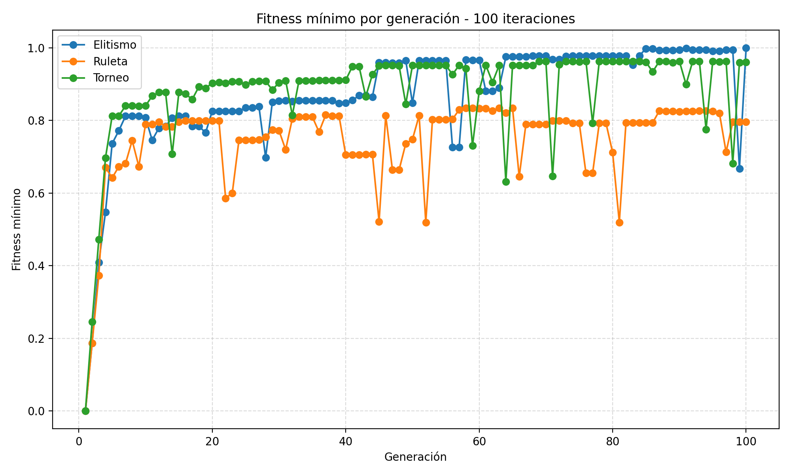
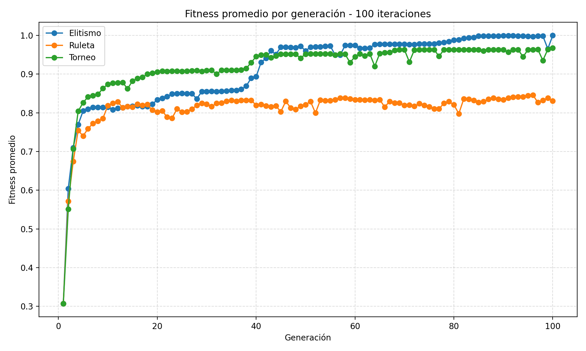
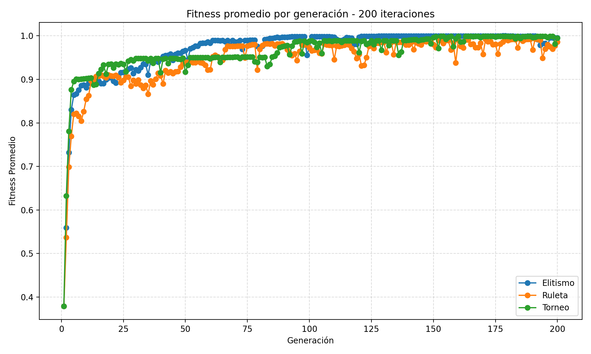
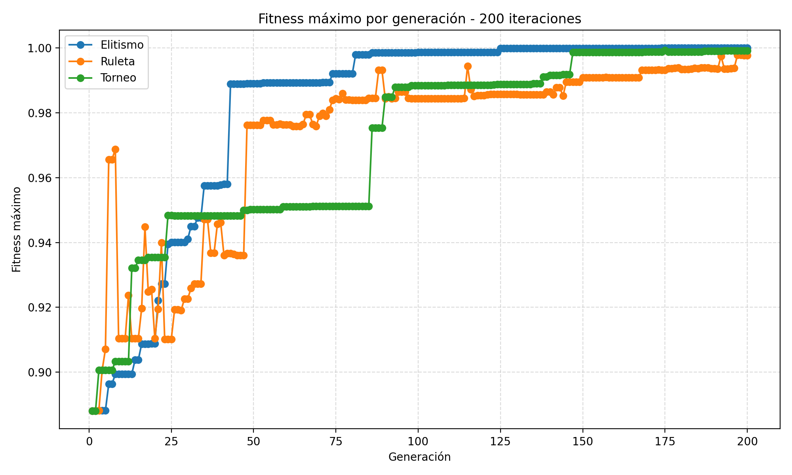
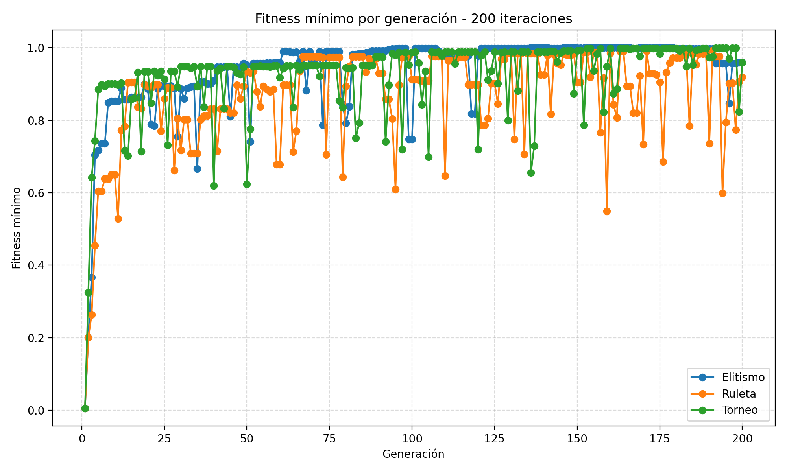
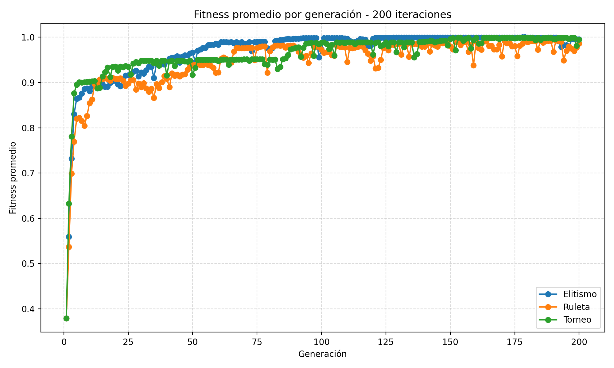
9. Tabla resumen de estabilidad y tiempos
En la comparación de 20, 100 y 200 corridas se observa que la calidad mejora de manera clara con elitismo y, en menor medida, con torneo. Ruleta es la más variable en corridas largas y la que más se beneficia de aumentar la mutación o el tamaño poblacional. También se reporta la generación promedio en la que se alcanzó el mejor fitness para que la comparación no se limite solo al valor final.
| Generaciones | Método | Mejor fitness medio | Gen. mejor fitness | Desv. estándar | Mejor x medio | Tiempo medio (s) |
|---|---|---|---|---|---|---|
| 20 | elitismo | 0.989780 | 12.00 | 0.008954 | 1068233423.67 | 0.002030 |
| 20 | ruleta | 0.976725 | 11.67 | 0.019439 | 1061137537.67 | 0.002118 |
| 20 | torneo | 0.988848 | 17.00 | 0.015498 | 1067715679.00 | 0.002268 |
| 100 | elitismo | 0.999831 | 95.33 | 0.000277 | 1073650841.00 | 0.008912 |
| 100 | ruleta | 0.891340 | 62.33 | 0.163292 | 1010712863.33 | 0.008914 |
| 100 | torneo | 0.973489 | 90.00 | 0.044219 | 1059228803.00 | 0.010852 |
| 200 | elitismo | 1.000000 | 154.33 | 0.000000 | 1073741801.67 | 0.016720 |
| 200 | ruleta | 0.998252 | 190.67 | 0.002048 | 1072802729.33 | 0.017623 |
| 200 | torneo | 0.999366 | 190.33 | 0.000851 | 1073401158.67 | 0.020388 |
La tabla confirma el trade-off pedido por el enunciado: al aumentar generaciones, el costo computacional sube casi linealmente, pero la calidad también mejora. Elitismo ofrece la mejor combinación entre óptimo alcanzado, estabilidad entre corridas y tiempo de ejecución.
10. Conclusiones y recomendación final
El TP se resolvió con un AG canónico que maximiza correctamente la función pedida y reporta cromosoma, fitness máximo, mínimo, promedio, desviación estándar y tiempo de cómputo.
En la corrida base de 20 generaciones, elitismo obtuvo el mejor fitness global, torneo alcanzó una convergencia fuerte con población completamente homogénea y ruleta mostró la mayor variabilidad. En experimentos más largos, elitismo fue el único método que llegó de manera consistente al óptimo global.
El trade-off principal no está en el tiempo, porque los tres métodos son muy rápidos en esta escala, sino en la estabilidad y la calidad de la solución. La recomendación final es usar elitismo para búsquedas largas y torneo cuando se quiera un equilibrio razonable entre presión selectiva y robustez. Ruleta queda como referencia didáctica, pero no como mejor opción práctica para este problema.